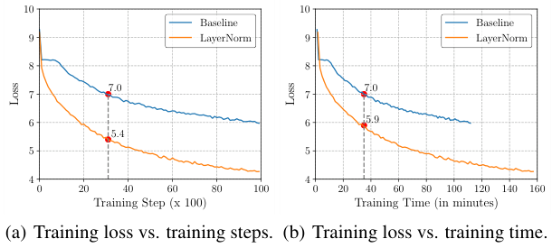
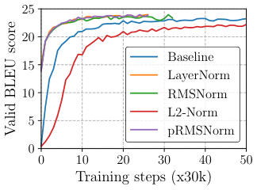
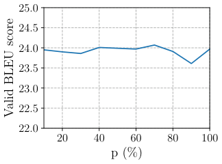
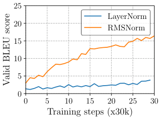
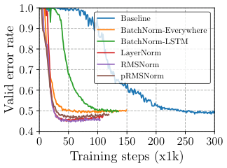
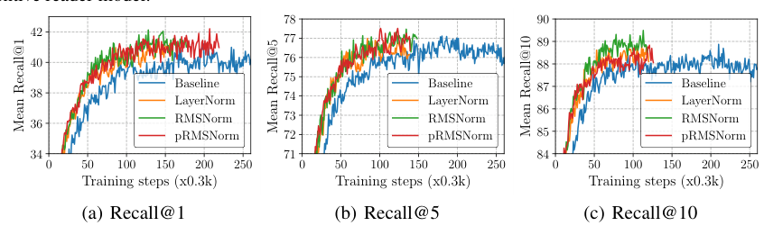
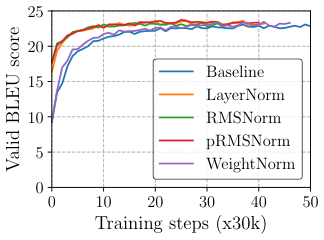

层归一化（LayerNorm）已被成功应用于各种深度神经网络，以帮助稳定训练并提升模型收敛，因为它能够处理输入和权重矩阵的重中心化与重缩放。然而，LayerNorm 引入的计算开销使这些改进代价高昂，并显著减慢底层网络，尤其是 RNN。在本文中，我们假设 LayerNorm 中的重中心化不变性并非必要，并提出均方根层归一化（Root Mean Square Layer Normalization，RMSNorm）。RMSNorm 根据均方根（RMS）正则化一层中神经元的汇总输入，从而赋予模型重缩放不变性和隐式学习率适应能力。RMSNorm 在计算上比 LayerNorm 更简单，因此更高效。我们还提出部分 RMSNorm（pRMSNorm），其中 RMS 从 \(p\%\) 的汇总输入估计，而不破坏上述性质。在使用多种网络架构的若干任务上的大量实验表明，RMSNorm 取得与 LayerNorm 相当的性能，但在不同模型上将运行时间减少 \(7\%\sim64\%\)。源代码见 https://github.com/bzhangGo/rmsnorm。
如何高效训练深度神经网络是一个长期挑战。为加速模型收敛，Ba 等 [3] 提出层归一化（LayerNorm），通过均值和方差统计量正则化一层内的神经元动态，从而稳定深度神经网络训练。由于其简单性且不依赖训练样本之间的依赖关系，LayerNorm 已被广泛应用于不同神经架构，并在计算机视觉 [19, 26]、语音识别 [37] 到自然语言处理 [31, 35] 等各种任务上取得显著成功。在某些情况下，LayerNorm 被发现对于成功训练模型至关重要 [6]。此外，与基于批次的样本解耦，使 LayerNorm 在使用 RNN 处理变长序列时优于批归一化（BatchNorm）[12]。
不幸的是，引入 LayerNorm 会带来计算开销。虽然对于归一化层很少的小型浅层神经模型而言这可以忽略，但当底层网络变得更大更深时，这个问题变得严重。结果，来自更快更稳定训练（以训练步数衡量）的效率收益被每训练步增加的计算成本抵消，从而削弱净效率，如图 1 所示。LayerNorm 被广泛认为有助于稳定的一个主要特征是其重中心化不变性：当输入或权重矩阵被一定噪声平移后，LayerNorm 后的汇总输入保持不变。我们认为这种均值归一化并不会降低隐藏状态或模型梯度的方差，并假设它对 LayerNorm 的成功影响很小。
在本文中，我们提出均方根层归一化（RMSNorm），它仅使用均方根（RMS）统计量来正则化一层中神经元的汇总输入。RMSNorm 相比 LayerNorm 减少了计算量并提高了效率。尽管公式更简单，RMS 归一化器有助于稳定层激活的幅度，确保对权重和数据集重缩放的不变性。我们还展示了在汇总输入子集上估计 RMS 的可能性，并保持这种不变性。假设汇总输入具有独立同分布结构，我们提出部分 RMSNorm，其中仅使用前 \(p\%\) 的汇总输入进行 RMS 估计。
我们在各种任务上全面检验模型，包括机器翻译、图像分类、图像—标题检索和问答。实验结果表明，在不同模型上，RMSNorm 取得与 LayerNorm 相当的性能，但在运行速度上表现出优势，加速 \(7\%\sim64\%\)。当使用部分（\(6.25\%\)）汇总输入估计 RMS 时，pRMSNorm 取得与 RMSNorm 相当的有竞争力性能。

深度神经网络被假设遭受的一个瓶颈是内部协变量偏移问题 [27]，即一层输入分布随着前层更新而变化，从而显著减慢训练。解决该问题的一个有希望方向是归一化。Ioffe 和 Szegedy [12] 引入批归一化（BatchNorm），基于每个训练小批量估计的均值和方差统计量来稳定激活。不幸的是，对训练样本的依赖使 BatchNorm 无法处理变长序列，尽管一些研究者开发了不同策略使其可用于 RNN [16, 8]。相反，Salimans 和 Kingma [22] 提出权重归一化（WeightNorm），重新参数化权重矩阵，使权重向量的长度与其方向解耦。Ba 等 [3] 提出层归一化，它与 BatchNorm 的不同之处在于统计量直接从同一层估计，而不访问其他训练样本。由于其简单有效，LayerNorm 已被成功应用于各种深度神经模型，并在不同任务上取得最先进性能 [19, 37, 31, 6]。
这些研究开创了将归一化整合为模型架构一部分的研究方向。该范式通过缩短模型收敛来确保令人鼓舞的性能，但代价是每个运行步消耗更多时间。为提高效率，Arpit 等 [2] 使用数据无关方法近似估计均值和方差统计量，从而避免计算批量统计量。Ioffe [11] 提出批重归一化，以减少 BatchNorm 中对小批量的依赖。Ulyanov 等 [30] 用实例归一化替代批归一化用于图像生成。Hoffer 等 [10] 和 Wu 等 [33] 观察到 1-范数可以作为 BatchNorm 中方差的替代，具有更少非线性操作和更高计算效率的优点。然而，所有这些工作仍遵循原始归一化结构，并利用从整个汇总输入估计的均值统计量来处理重中心化不变性。
本节基于标准前馈神经网络简要回顾 LayerNorm。给定输入向量 \(\mathbf{x}\in\mathbb{R}^m\)，前馈网络通过线性变换后接非线性激活将其投影为输出向量 \(\mathbf{y}\in\mathbb{R}^n\)：
其中 \(\mathbf{w}_i\) 是到第 \(i\) 个输出神经元的权重向量，\(b_i\) 是偏置标量（通常初始化为 0），\(f(\cdot)\) 是逐元素非线性函数。\(\mathbf{a}\in\mathbb{R}^n\) 表示神经元的权重汇总输入，也是归一化的目标。
这种普通网络可能遭受内部协变量偏移问题 [12]，即一层输入分布随着前层更新而变化。这可能负面影响参数梯度的稳定性，延迟模型收敛。为减少这种偏移，LayerNorm 归一化汇总输入，从而固定其均值和方差如下：
其中 \(\bar{a}_i\) 是向量 \(\bar{\mathbf{a}}\in\mathbb{R}^n\) 的第 \(i\) 个值，作为层激活中 \(a_i\) 的归一化替代。\(\mathbf{g}\in\mathbb{R}^n\) 是用于重新缩放标准化汇总输入的增益参数，初始设为 1。\(\mu\) 和 \(\sigma^2\) 分别是从原始汇总输入 \(\mathbf{a}\) 估计的均值和方差统计量：
因此，LayerNorm 迫使神经元的范数与输入和权重矩阵解耦。
LayerNorm 成功的一个众所周知解释是它的重中心化和重缩放不变性。前者使模型对输入和权重上的平移噪声不敏感，后者在输入和权重都被随机缩放时保持输出表示不变。在本文中，我们假设重缩放不变性才是 LayerNorm 成功的原因，而不是重中心化不变性。
我们提出 RMSNorm，它只关注重缩放不变性，并简单地根据均方根（RMS）统计量正则化汇总输入：
直观上，RMSNorm 通过完全移除式 (3) 中的均值统计量来简化 LayerNorm，代价是牺牲均值归一化提供的不变性。当汇总输入的均值为零时，RMSNorm 与 LayerNorm 完全相等。尽管 RMSNorm 不像 LayerNorm 那样重中心化汇总输入，我们通过实验证明这一性质并非 LayerNorm 成功的根本原因，且 RMSNorm 同样有效或更有效。
RMS 衡量输入的二次均值，在 RMSNorm 中迫使汇总输入进入一个 \(\sqrt{n}\) 缩放的单位球。这样，无论输入和权重分布如何缩放，输出分布保持不变，有利于层激活的稳定性。尽管欧几里得范数仅与 RMS 相差 \(\sqrt{n}\) 因子且已被成功探索 [22]，我们实证发现它不适用于层归一化。我们假设用输入向量大小缩放球体很重要，因为它使归一化在不同大小向量之间更稳健。据我们所知，使用 RMS 进行神经网络归一化的想法此前未被研究。
不变性衡量归一化后的模型输出是否随输入和权重矩阵变化而高度变化。Ba 等 [3] 表明不同归一化方法表现出不同不变性性质，这对模型鲁棒性有重要贡献。本节从理论上检验 RMSNorm 的不变性。
我们考虑 RMSNorm 的以下一般形式：
其中 \(\odot\) 表示逐元素乘法。我们的主要结果总结在表 1 中。RMSNorm 对权重矩阵和输入重缩放都不变，因为 RMS 具有以下线性性质：
其中 \(\alpha\) 是缩放值。假设权重矩阵按因子 \(\delta\) 缩放，即 \(\mathbf{W}'=\delta\mathbf{W}\)，则该变化不影响最终层输出：
相反，如果仅对单个权重向量进行缩放，该性质不再成立，因为不同缩放因子破坏了 RMS 的线性性质。类似地，如果对输入施加以因子 \(\delta\) 的缩放，即 \(\mathbf{x}'=\delta\mathbf{x}\)，RMSNorm 的输出通过类似于式 7 的分析保持不变。我们可以很容易地将等式扩展到基于批次的输入以及整个数据集。因此，RMSNorm 对其输入缩放不变。
与 LayerNorm 的主要区别是 RMSNorm 不重中心化，因此对变量平移不表现出类似线性性质。它并非对所有重中心化操作不变。
| 方法 | 权重矩阵重缩放 | 权重矩阵重中心化 | 权重向量重缩放 | 数据集重缩放 | 数据集重中心化 | 单个训练样本重缩放 |
|---|---|---|---|---|---|---|
| BatchNorm | \(\surd\) | \(\times\) | \(\surd\) | \(\surd\) | \(\surd\) | \(\times\) |
| WeightNorm | \(\surd\) | \(\times\) | \(\surd\) | \(\times\) | \(\times\) | \(\times\) |
| LayerNorm | \(\surd\) | \(\surd\) | \(\times\) | \(\surd\) | \(\times\) | \(\surd\) |
| RMSNorm | \(\surd\) | \(\times\) | \(\times\) | \(\surd\) | \(\times\) | \(\surd\) |
上述分析仅考虑缩放输入和权重矩阵对层输出的影响。然而，在一般设置中，RMSNorm 增强的神经网络通过标准随机梯度下降方法训练，其中模型梯度的鲁棒性对参数更新和模型收敛至关重要（另见 Santurkar 等 [23]，他们认为归一化方法的成功并非来自对层输入增加的稳定性，而是由于优化景观平滑度增加）。本节研究 RMSNorm 中模型梯度的性质。
给定损失函数 \(\mathcal{L}\)，我们通过式 (4) 反向传播，得到关于参数 \(\mathbf{g}\)、\(\mathbf{b}\) 的梯度如下：
其中 \(\mathbf{v}\) 是式 (4) 中 \(f(\cdot)\) 内部整个表达式的简写，\(\partial\mathcal{L}/\partial\mathbf{v}\) 是从 \(\mathcal{L}\) 反向传播到 \(\mathbf{v}\) 的梯度。两个梯度 \(\partial\mathcal{L}/\partial\mathbf{b}\) 和 \(\partial\mathcal{L}/\partial\mathbf{g}\) 都对输入 \(\mathbf{x}\) 和权重矩阵 \(\mathbf{W}\) 的缩放不变（对于 \(\partial\mathcal{L}/\partial\mathbf{g}\)，这是因为式 (6) 的线性性质）。此外，\(\mathbf{g}\) 的梯度与归一化后的汇总输入成正比，而不是原始输入。这增强了 \(\mathbf{g}\) 幅度的稳定性。
与这些向量参数不同，权重矩阵 \(\mathbf{W}\) 的梯度由于 RMS 中的二次计算而更复杂。形式上，
其中 \(\mathrm{diag}(\cdot)\) 表示输入的对角矩阵，\(\otimes\) 表示 Kronecker 积，\(\mathbf{I}\) 表示单位矩阵。为清晰起见，我们明确使用 \(\mathbf{x}\) 表示矩阵乘法。矩阵项 \(\mathbf{R}\) 将 \(\mathbf{W}\) 的梯度与输入 \(\mathbf{x}\) 和权重矩阵 \(\mathbf{W}\) 关联。通过全面分析，我们可以证明该项与输入和权重矩阵缩放负相关。在给输入 \(\mathbf{x}\)（\(\mathbf{x}'=\delta\mathbf{x}\)）或权重矩阵（\(\mathbf{W}'=\delta\mathbf{W}\)）赋予缩放 \(\delta\) 后，我们有
如果将缩放后的项 \(\mathbf{R}'\) 放回式 (9)，我们可以很容易证明梯度 \(\partial\mathcal{L}/\partial\mathbf{w}\) 对输入缩放不变，但与权重矩阵缩放保持负相关。降低梯度 \(\partial\mathcal{L}/\partial\mathbf{w}\) 对输入缩放的敏感性确保其平滑性并提高学习稳定性。另一方面，负相关充当隐式学习率适应器，动态控制梯度范数，避免大范数权重矩阵并改善模型收敛。
RMSNorm 的重缩放不变性归因于 RMS 的线性性质。考虑到一层中的神经元通常具有独立同分布结构，我们认为可以在这些神经元的子集上估计 RMS，而不是全部。我们提出部分 RMSNorm（pRMSNorm）。给定未归一化输入 \(\mathbf{a}\)，pRMSNorm 从 \(\mathbf{a}\) 的前 \(p\%\) 元素推断 RMS 统计量：\(\overline{\mathrm{RMS}}(\mathbf{a})=\sqrt{\frac{1}{k}\sum_{i=1}^{k}a_i^2}\)，其中 \(k=\lceil n\cdot p\rceil\) 表示用于 RMS 估计的元素数。线性性质对 \(\overline{\mathrm{RMS}}\) 仍成立，如式 (6)，这表明 pRMSNorm 与 RMSNorm 共享表 1 所示相同的不变性性质。
RMS 是 RMS 的有偏估计，通常不准确。尽管理论上 pRMSNorm 近似 RMSNorm，但我们观察到梯度不稳定性，当 \(m\) 较小时梯度倾向于爆炸。然而在实践中，pRMSNorm 模型可以在部分比例为 \(6.25\%\) 时成功令人满意地收敛。
为测试不同实现中层归一化的效率，我们使用 TensorFlow [1]、PyTorch [20] 和 Theano [29] 进行实验。我们将 RMSNorm 加入不同模型，与未归一化基线和 LayerNorm 比较。这些模型基于多样架构，涵盖不同 RNN 变体、卷积和自注意力模型，以及各种激活（如 sigmoid、tanh 和 softmax），初始化范围从均匀、正态、正交及不同初始化范围或方差。除非另有说明，所有速度相关统计量在一块 TITAN X（Pascal）上测量。报告时间是 3 次运行的平均值。我们还列出这三次运行的标准差。

| 模型 | Test14 | Test17 | Time |
|---|---|---|---|
| Baseline | 21.7 | 23.4 | 399±3.40s |
| LayerNorm | 22.6 | 23.6 | 665±32.5s |
| L2-Norm | 20.7 | 22.0 | 482±19.7s |
| RMSNorm | 22.4 | 23.7 | 501±11.8s (24.7%) |
| pRMSNorm | 22.6 | 23.1 | 493±10.7s (25.9%) |
机器翻译旨在将句子从一种（源）语言转换为另一种（目标）语言。我们关注基于注意力增强编码器—解码器框架的神经机器翻译。我们在 WMT14 英德翻译任务上训练两个不同模型：基于 GRU 的 RNNSearch [4] 和基于自注意力的神经 Transformer [31]。实验设置更多细节及与 WeightNorm 的比较见附录 A.1。
我们首先实验 RNNSearch。归一化被加入循环连接和前馈层。除了没有任何归一化的 RNNSearch（Baseline）和带 LayerNorm 的版本，我们还比较了配备 L2-Norm 的相同模型（即用 L2-Norm 替换 RMS），此前已观察到 L2-Norm 可改善词汇选择 [18]。
图 2 展示每 30k 训练步后开发集 BLEU 分数的演变，表 2 总结测试结果。简言之，LayerNorm 和 RMSNorm 都通过加速模型收敛优于 Baseline：它们将收敛所需训练步数减少约 \(50\%\)，并提高测试准确率，RMSNorm 与 LayerNorm 相当。这支持我们的假设：重缩放不变性是 LayerNorm 的核心性质，RMSNorm 是有效替代。我们的 L2-Norm 结果表明它未能改善模型。2 表 2 结果突出表明，在 TensorFlow 中带 LayerNorm 的 RNN 存在严重计算低效，LayerNorm 比 Baseline 慢约 \(67\%\)。在这方面，RMSNorm 表现显著更好，比 LayerNorm 改善约 \(25\%\)。
表 3 进一步列出 Theano 和 PyTorch 中不同模型的翻译结果。总体而言，RMSNorm 取得与 LayerNorm 相当的翻译质量，但计算开销更小，优于 LayerNorm，加速范围为 \(11\%\sim34\%\)。此外，我们观察到尽管理论上 pRMSNorm 的计算量少于 RMSNorm，但 pRMSNorm（\(p=6.25\%\)）有时反而更慢。我们将此归因于这些计算框架中张量切片操作实现不佳，可通过特定底层编码改进。
在 pRMSNorm 中，部分比例 \(p\) 直接控制估计 RMS 的准确性，从而影响模型训练稳定性。图 7 显示 \(p\) 对模型性能的影响。令人惊讶的是，我们发现 \(p\) 的规模对 RNNSearch 最终翻译质量影响很小：使用小比例不会显著降低 BLEU 分数。我们在以下所有实验中将 \(p\) 设为 \(6.25\%\)。
我们还实验了 Transformer，它基于自注意力，避免循环连接并允许更高并行度。层归一化仍是架构的重要组成部分。我们使用内部 TensorFlow 实现的 Transformer，并采用 [31] 中的 base 设置，所有模型训练 300K 步。我们将无归一化的 Transformer 作为 Baseline，并比较 RMSNorm 增强的 Transformer 与配备 LayerNorm 的 Transformer。表 4 显示结果，我们观察到归一化对 Transformer 的重要性，没有它训练失败。RMSNorm 取得与 LayerNorm 相当的 BLEU 分数，并带来 \(7\%\sim9\%\) 的加速。与 RNNSearch 相比，归一化的相对成本更低，因为 Transformer 中顺序归一化操作显著更少。

| 模型 | Test14 | Test17 | Time |
|---|---|---|---|
| Baseline (Th) | 21.8 | 22.9 | 596±20.8s |
| LayerNorm (Th) | 22.3 | 23.8 | 988±1.10s |
| RMSNorm (Th) | 22.5 | 23.2 | 652±24.1s (34.0%) |
| pRMSNorm (Th) | 22.7 | 24.0 | 658±17.9s (33.4%) |
| Baseline (Py) | 22.7 | 24.7 | 427±6.50s |
| LayerNorm (Py) | 23.2 | 24.3 | 857±17.2s |
| RMSNorm (Py) | 22.9 | 24.5 | 763±16.2s (11.0%) |
| pRMSNorm (Py) | 23.2 | 24.6 | 754±36.1s (12.0%) |
| 模型 | Test14 | Test17 | Time |
|---|---|---|---|
| Baseline | — | — | 210±0.23s |
| LayerNorm | 26.6 | 27.7 | 248±1.31s |
| RMSNorm | 26.8 | 27.7 | 231±0.04s (6.9%) |
| pRMSNorm | 26.5 | 27.8 | 225±1.63s (9.3%) |
| 模型 | 统计量 | 1 | 2 | 3 | 4 | ALL |
|---|---|---|---|---|---|---|
| Baseline | M | -2.60 | -1.19 | -1.43 | -1.53 | -1.60 |
| Baseline | S | 7.35 | 2.33 | 2.61 | 2.73 | 3.04 |
| LayerNorm | M | -0.43 | -0.48 | -0.50 | -0.50 | -0.51 |
| LayerNorm | S | 1.19 | 1.51 | 1.51 | 1.51 | 1.51 |
| RMSNorm | M | -0.40 | -0.60 | -0.69 | -0.74 | -0.73 |
| RMSNorm | S | 1.19 | 1.51 | 1.51 | 1.51 | 1.51 |
归一化对均值和标准差的影响：表 5 展示 RNNSearch 模型中隐藏表示在不同词元位置上的均值和标准差分布。如 Ba 等 [3] 所观察，Baseline 中均值和标准差不稳定。由于其归一化性质，RMSNorm 和 LayerNorm 都稳定了标准差。尽管 RMSNorm 中均值未被归一化，但实践中它比 Baseline 的均值更稳定。这支持我们的假设：RMSNorm 稳定循环激活，而无需显式归一化均值。
RMSNorm 的鲁棒性：一个遗留问题是 LayerNorm 中的重中心化操作（RMSNorm 放弃）是否使模型对任意权重/偏置初始化更鲁棒。我们在 TensorFlow 版 Nematus 的 RNNSearch 上进行实验，将权重初始化中心改为 0.2。图 4 结果显示，LayerNorm 在异常初始化下变得非常不稳定，而 RMSNorm 更鲁棒（二者都低于原始初始化）。迄今为止的实证证据表明，RMSNorm 与 LayerNorm 同样鲁棒，或更鲁棒。

该阅读理解任务是完形填空式问答任务，模型需要回答关于段落的问题，答案是从段落中匿名化的实体 [9]。我们在 CNN 语料上训练 Hermann 等 [9] 提出的双向注意力读者模型。实验设置更多细节见附录 A.2。我们将 RMSNorm 与 LayerNorm 和 BatchNorm 比较。
图 5 和表 6 显示结果。在按序列每个时间步分别统计量对 RNN 进行 BatchNorm 归一化后，BatchNorm-LSTM 和 BatchNorm-Everywhere 都帮助加速训练过程收敛。相比之下，LayerNorm 和 RMSNorm 不仅比 BatchNorm 收敛更快，而且达到更低的验证错误率，尽管 pRMSNorm 表现略差于 RMSNorm。尽管图 5 中 RMSNorm 和 LayerNorm 性能相当，但表 6 显示 RMSNorm 比 LayerNorm 快约 \(15\%\)。3

| 模型 | Time |
|---|---|
| Baseline | — |
| BatchNorm-Everywhere | — |
| BatchNorm-LSTM | — |
| LayerNorm | — |
| RMSNorm | 约快 15% |
| pRMSNorm | — |
图像—标题检索是一个跨模态任务，旨在学习图像和句子的联合嵌入空间，包括两个子任务：图像检索和标题检索。前者根据查询标题对一组图像排序，后者根据查询图像对一组标题排序。我们在 Microsoft COCO 数据集 [17] 上使用 Theano 中的公开源代码训练 Vendrov 等 [32] 提出的顺序嵌入模型（OE）。实验设置模型细节见附录 A.3。我们将 RMSNorm 与两个模型比较：没有任何归一化的模型（Baseline）和带 LayerNorm 的模型。
图 6 展示每 300 训练步后验证集上的 R@K 曲线，表 7 列出最终测试结果。如图 6 所示，在所有指标上，RMSNorm 和 LayerNorm 在模型收敛方面都持续优于 Baseline。我们观察到在验证集上，RMSNorm 在召回值方面略超过 LayerNorm。对于表 7 的最终测试结果，RMSNorm 和 LayerNorm 都改善模型性能，达到更高召回值（除 LayerNorm 在 R@5 上）和更低平均排名，尽管 RMSNorm 表现出比 LayerNorm 更好的泛化。此外，表 8 结果显示，RMSNorm 相比 LayerNorm 加速训练 \(40\%\sim64\%\)，突出 pRMSNorm 更好的效率。

| 模型 | 标题检索 | 图像检索 | ||||||
|---|---|---|---|---|---|---|---|---|
| R@1 | R@5 | R@10 | Mean r | R@1 | R@5 | R@10 | Mean r | |
| Sym [32] | 45.4 | 88.7 | 95.8 | 36.3 | 85.8 | — | 9.0 | — |
| OE + Baseline [32]† | 46.7 | 88.9 | 95.7 | 37.9 | 85.9 | — | 8.1 | — |
| OE + Baseline [31]† | 46.6 | 79.3 | 89.1 | 5.2 | 37.8 | 73.6 | 85.7 | — |
| OE + LayerNorm [3] | 48.5 | 80.6 | 89.8 | 5.1 | 38.9 | 74.3 | 86.3 | — |
| OE + Baseline（本工作） | 45.8 | 79.7 | 88.8 | 5.4 | 37.6 | 73.6 | 85.8 | — |
| OE + LayerNorm（本工作） | 47.9 | 79.5 | 89.2 | 5.3 | 38.4 | 74.6 | 86.7 | — |
| OE + RMSNorm | 48.7 | 79.7 | 89.5 | 5.3 | 39.0 | 74.8 | 86.3 | — |
| OE + pRMSNorm | 46.8 | 79.8 | 90.3 | 5.2 | 39.0 | 74.5 | 86.3 | — |
| 模型 | Time |
|---|---|
| Baseline | 2.11±0.047s |
| LayerNorm | 12.02±0.191s |
| RMSNorm | 7.12±0.207s (40.8%) |
| pRMSNorm | 4.34±0.168s (63.9%) |
CIFAR-10 是一个有 10 个不同类别的监督图像分类任务。我们训练 ConvPool-CNN-C 架构 [15] 的修改版本，并遵循与 Salimans 和 Kingma [22] 相同的实验协议。包括 BatchNorm、LayerNorm 和 WeightNorm 用于比较。训练细节见附录 A.4。
图 9 和表 10 显示结果。使用归一化技术增强的模型比 Baseline 收敛更快，其中 BatchNorm 表现最好。与先前观察 [3] 类似，我们还发现层归一化在图像处理中不如 BatchNorm 和 WeightNorm。尽管 LayerNorm 通过缩短模型收敛优于 Baseline，但未能泛化到测试集，使测试误差退化 \(1.53\%\)。相反，RMSNorm 表现出更好的泛化，超过 Baseline \(0.013\%\)，并相比 LayerNorm 节省约 \(20.5\%\) 训练时间。pRMSNorm 进一步加速 \(2.6\%\)，但代价是牺牲 \(1.54\%\) 的测试准确率。
| 模型 | Test Error | Time |
|---|---|---|
| Baseline | 8.96% | 21±0.0s |
| BatchNorm | 8.25% | 38±0.0s |
| WeightNorm | 8.28% | 23±0.0s |
| LayerNorm | 10.49% | 39±0.4s |
| RMSNorm | 8.83% | 31±0.5s (20.5%) |
| pRMSNorm | 10.37% | 30±0.4s (23.1%) |
本文提出 RMSNorm，一种新的归一化方法，根据 RMS 归一化汇总输入。RMSNorm 保留 LayerNorm 的重缩放不变性，但避免重中心化不变性，后者对模型训练贡献较小。与 LayerNorm 相比，使用 RMSNorm 的模型计算开销更少。RMSNorm 可以很容易地作为 LayerNorm 的即插即用替代应用于不同模型架构。若干 NLP 任务实验表明，RMSNorm 在质量上与 LayerNorm 相当，但加速运行速度。实际速度提升取决于框架、硬件、神经网络架构以及其他组件的相对计算成本，我们在不同模型和实现中实证观察到 \(7\%\sim64\%\) 的加速。我们的效率改进来自简化计算，因此预期它们与增加训练速度的其他手段（如低精度算术和 GPU 核融合）正交。我们还实验了 pRMSNorm，它在汇总输入子集上估计 RMS。尽管理论上更快，我们并未一致观察到 pRMSNorm 的实证速度提升。我们将留给未来工作研究是否可以通过代码优化改善性能。
未来，我们希望进一步分析 RMSNorm 成功背后的原因。受 1-范数在 BatchNorm 中近期成功的启发，我们将探索 RMSNorm 的不同范数，并简化其他归一化技术，如 BatchNorm。
我们感谢审稿人的深刻评论，以及 Antonio Valerio Miceli Barone 对 MT 权重归一化的支持。本项目获得欧盟 H2020-ICT-2018-2-825460（ELITR）资助。Biao Zhang 还感谢百度奖学金的支持。本工作使用剑桥大学研究计算服务运营的 Cambridge Tier-2 系统资源完成（http://www.hpc.cam.ac.uk），该资源由 EPSRC Tier-2 资本资助 EP/P020259/1 资助。
[1] Martin Abadi, Paul Barham, Jianmin Chen, Zhifeng Chen, Andy Davis, Jeffrey Dean, Matthieu Devin, Sanjay Ghemawat, Geoffrey Irving, Michael Isard, Manjunath Kudlur, Josh Levenberg, Rajat Monga, Sherry Moore, Derek G. Murray, Benoit Steiner, Paul Tucker, Vijay Vasudevan, Pete Warden, Martin Wicke, Yuan Yu, and Xiaoqiang Zheng. Tensorflow: A system for large-scale machine learning. In Proceedings of the 12th USENIX Conference on Operating Systems Design and Implementation, OSDI’16, pages 265–283, 2016.
[2] Devansh Arpit, Yingbo Zhou, Bhargava U Kota, and Venu Govindaraju. Normalization propagation: A parametric technique for removing internal covariate shift in deep networks. arXiv preprint arXiv:1603.01431, 2016.
[3] Jimmy Lei Ba, Jamie Ryan Kiros, and Geoffrey E Hinton. Layer normalization. arXiv preprint arXiv:1607.06450, 2016.
[4] Dzmitry Bahdanau, Kyunghyun Cho, and Yoshua Bengio. Neural machine translation by jointly learning to align and translate. arXiv e-prints, abs/1409.0473, September 2014.
[5] Nils Bjorck, Carla P Gomes, Bart Selman, and Kilian Q Weinberger. Understanding batch normalization. In S. Bengio, H. Wallach, H. Larochelle, K. Grauman, N. Cesa-Bianchi, and R. Garnett, editors, Advances in Neural Information Processing Systems 31, pages 7694–7705. Curran Associates, Inc., 2018.
[6] Mia Xu Chen, Orhan Firat, Ankur Bapna, Melvin Johnson, Wolfgang Macherey, George Foster, Llion Jones, Mike Schuster, Noam Shazeer, Niki Parmar, Ashish Vaswani, Jakob Uszkoreit, Lukasz Kaiser, Zhifeng Chen, Yonghui Wu, and Macduff Hughes. The best of both worlds: Combining recent advances in neural machine translation. In Proceedings of the 56th Annual Meeting of the Association for Computational Linguistics (Volume 1: Long Papers), pages 76–86. Association for Computational Linguistics, 2018.
[7] Kyunghyun Cho, Bart Van Merrienboer, Caglar Gulcehre, Dzmitry Bahdanau, Fethi Bougares, Holger Schwenk, and Yoshua Bengio. Learning phrase representations using rnn encoder-decoder for statistical machine translation. arXiv preprint arXiv:1406.1078, 2014.
[8] Tim Cooijmans, Nicolas Ballas, César Laurent, Çağlar Gülçehre, and Aaron Courville. Recurrent batch normalization. arXiv preprint arXiv:1603.09025, 2016.
[9] Karl Moritz Hermann, Tomas Kocisky, Edward Grefenstette, Lasse Espeholt, Will Kay, Mustafa Suleyman, and Phil Blunsom. Teaching machines to read and comprehend. In Advances in Neural Information Processing Systems, pages 1693–1701, 2015.
[10] Elad Hoffer, Ron Banner, Itay Golan, and Daniel Soudry. Norm matters: efficient and accurate normalization schemes in deep networks. arXiv preprint arXiv:1803.01814, 2018.
[11] Sergey Ioffe. Batch renormalization: Towards reducing minibatch dependence in batch-normalized models. In Advances in Neural Information Processing Systems, pages 1945–1953, 2017.
[12] Sergey Ioffe and Christian Szegedy. Batch normalization: Accelerating deep network training by reducing internal covariate shift. In Proceedings of the 32Nd International Conference on International Conference on Machine Learning - Volume 37, ICML’15, pages 448–456, 2015.
[13] Diederik P Kingma and Jimmy Ba. Adam: A method for stochastic optimization. arXiv preprint arXiv:1412.6980, 2014.
[14] Ryan Kiros, Ruslan Salakhutdinov, and Richard S. Zemel. Unifying visual-semantic embeddings with multimodal neural language models. CoRR, abs/1411.2539, 2014.
[15] A. Krizhevsky and G. Hinton. Learning multiple layers of features from tiny images. Master’s thesis, Department of Computer Science, University of Toronto, 2009.
[16] César Laurent, Gabriel Pereyra, Philémon Brakel, Ying Zhang, and Yoshua Bengio. Batch normalized recurrent neural networks. In 2016 IEEE International Conference on Acoustics, Speech and Signal Processing (ICASSP), pages 2657–2661. IEEE, 2016.
[17] Tsung-Yi Lin, Michael Maire, Serge Belongie, James Hays, Pietro Perona, Deva Ramanan, Piotr Dollár, and C Lawrence Zitnick. Microsoft coco: Common objects in context. In European conference on computer vision, pages 740–755. Springer, 2014.
[18] Toan Q Nguyen and David Chiang. Improving lexical choice in neural machine translation. arXiv preprint arXiv:1710.01329, 2017.
[19] Niki Parmar, Ashish Vaswani, Jakob Uszkoreit, Lukasz Kaiser, Noam Shazeer, and Alexander Ku. Image transformer. arXiv preprint arXiv:1802.05751, 2018.
[20] Adam Paszke, Sam Gross, Soumith Chintala, Gregory Chanan, Edward Yang, Zachary DeVito, Zeming Lin, Alban Desmaison, Luca Antiga, and Adam Lerer. Automatic differentiation in pytorch. In NIPS-W, 2017.
[21] Matt Post. A call for clarity in reporting bleu scores. arXiv preprint arXiv:1804.08771, 2018.
[22] Tim Salimans and Durk P Kingma. Weight normalization: A simple reparameterization to accelerate training of deep neural networks. In Advances in Neural Information Processing Systems 29, pages 901–909. 2016.
[23] Shibani Santurkar, Dimitris Tsipras, Andrew Ilyas, and Aleksander Madry. How does batch normalization help optimization? In Advances in Neural Information Processing Systems 31, pages 2488–2498. 2018.
[24] Rico Sennrich, Barry Haddow, and Alexandra Birch. Neural machine translation of rare words with subword units. arXiv preprint arXiv:1508.07909, 2015.
[25] Rico Sennrich, Orhan Firat, Kyunghyun Cho, Alexandra Birch, Barry Haddow, Julian Hitschler, Marcin Junczys-Dowmunt, Samuel Laubli, Antonio Valerio Miceli Barone, Jozef Mokry, and Maria Nadejde. Nematus: a Toolkit for Neural Machine Translation. In Proceedings of the Software Demonstrations of the 15th Conference of the European Chapter of the Association for Computational Linguistics, pages 65–68, Valencia, Spain, April 2017.
[26] Piyush Sharma, Nan Ding, Sebastian Goodman, and Radu Soricut. Conceptual captions: A cleaned, hypernymed, image alt-text dataset for automatic image captioning. In Proceedings of the 56th Annual Meeting of the Association for Computational Linguistics (Volume 1: Long Papers), pages 2556–2565, 2018.
[27] Hidetoshi Shimodaira. Improving predictive inference under covariate shift by weighting the log-likelihood function. Journal of Statistical Planning and Inference, 90(2):227–244, 2000.
[28] Karen Simonyan and Andrew Zisserman. Very deep convolutional networks for large-scale image recognition. arXiv preprint arXiv:1409.1556, 2014.
[29] Theano Development Team. Theano: A Python framework for fast computation of mathematical expressions. arXiv e-prints, May 2016.
[30] Dmitry Ulyanov, Andrea Vedaldi, and Victor S. Lempitsky. Instance normalization: The missing ingredient for fast stylization. CoRR, 2016.
[31] Ashish Vaswani, Noam Shazeer, Niki Parmar, Jakob Uszkoreit, Llion Jones, Aidan N Gomez, Lukasz Kaiser, and Illia Polosukhin. Attention is all you need. In Advances in Neural Information Processing Systems 30, pages 5998–6008. 2017.
[32] Ivan Vendrov, Ryan Kiros, Sanja Fidler, and Raquel Urtasun. Order-embeddings of images and language. arXiv preprint arXiv:1511.06361, 2015.
[33] Shuang Wu, Guoqi Li, Lei Deng, Liu Liu, Dong Wu, Yuan Xie, and Luping Shi. L1-norm batch normalization for efficient training of deep neural networks. IEEE transactions on neural networks and learning systems, 2018.
[34] Yuxin Wu and Kaiming He. Group normalization. In Proceedings of the European Conference on Computer Vision (ECCV), pages 3–19, 2018.
[35] Biao Zhang and Rico Sennrich. A lightweight recurrent network for sequence modeling. arXiv preprint arXiv:1905.13324, 2019.
[36] Hongyi Zhang, Yann N. Dauphin, and Tengyu Ma. Residual learning without normalization via better initialization. In International Conference on Learning Representations, 2019.
[37] Shiyu Zhou, Linhao Dong, Shuang Xu, and Bo Xu. Syllable-based sequence-to-sequence speech recognition with the transformer in mandarin chinese. arXiv preprint arXiv:1804.10752, 2018.
我们在 WMT14 英德翻译任务上实验，训练语料包含 450 万对齐句对。我们使用 newstest2013 作为开发集进行模型选择，newstest2014 和 newstest2017 作为测试集。我们使用 sacrebleu [21] 报告的大小写敏感、去词元化 BLEU 分数评估翻译质量。4 应用字节对编码算法以减少未登录词，合并操作 32k [24]。所有模型基于最大对数似然训练，并用因子 0.1 的标签平滑松弛。5
对于 RNNSearch，我们选择最大源/目标长度为 80 的训练样本。嵌入大小和隐藏大小分别设为 512 和 1024。我们应用 Adam [13] 调优模型参数，学习率 \(1e^{-4}\)，批量大小 80。除方阵权重参数用随机正交矩阵处理外，权重参数用标准差 0.01 缩放的标准正态分布初始化。
对于 Transformer，我们采用 [31] 中的 base 设置。模型大小和 FFN 隐藏大小分别设为 512 和 2048，使用 8 个注意力头。学习率按运行步数平方根倒数调度，预热步数 4000。每个批次组织为 25000 个源/目标词元，使用 Adam（\(\beta_1=0.9,\beta_2=0.98\)）[13] 训练。所有权重参数采用 Xavier 初始化。
我们还将模型与 WeightNorm 比较。我们使用 Theano 版 Nematus 提供的 WeightNorm 实现进行 RNNSearch 实验。图 7 结果显示 WeightNorm 收敛更慢，需要更多训练步。此外，WeightNorm 在测试集上的整体翻译质量（Test14/Test17 分别为 21.7/23.5）低于 LayerNorm 和 \((p)\)RMSNorm。我们还尝试使用官方 API（nn.utils.weight_norm）将 WeightNorm 集成到基于 PyTorch 的 RNNSearch，但导致内存不足问题。

模型基于 Theano 公开源代码 [8] 在 CNN 语料上训练。我们采用 top4 设置，预处理数据集中每个段落最多包含 4 句。为与 LayerNorm 公平比较，我们仅在 LSTM 内使用 RMSNorm。LSTM 隐藏大小设为 240。模型用 Adam 优化器 [13] 优化，批量大小 64，学习率 \(8e^{-5}\)。所有权重参数采用 Xavier 初始化，方阵权重进一步强制正交。
在 OE 模型中，句子通过基于 GRU 的 RNN [7] 编码，图像由预训练 VGGNet [28] 的输出表示。OE 将标题—图像对视为二级偏序，并使用成对排序损失 [14] 训练联合模型。
我们采用 VGGNet 的 10crop 特征作为图像表示，词嵌入大小和 GRU 隐藏大小分别设为 300 和 1024。不同模型参数使用 Xavier、高斯和正交初始化。所有模型用 Adam 优化器训练，批量大小 128，学习率 \(1e^{-3}\)。我们使用 Recall@K（R@K）值评估，并报告五个单独测试集（每个包含 1000 张图像和 5000 条标题）的平均结果作为最终测试结果。
我们将层归一化应用于图像表示的宽度和高度维度，并在通道维度执行增益缩放和偏置平移。我们使用 Adam 优化器训练所有模型，批量大小 100。遵循 [22]，Baseline 学习率设为 0.0003，其他设为 0.003。考虑到该任务模型较小，我们将 pRMSNorm 的 \(p\) 设为 12.5%。
说明：本文档为所提供 PDF 内容的中文翻译版；参考文献保留英文原样。原文图已按英文本裁切嵌入。原文部分表格 OCR 存在列错位或数据缺失，已按可读内容整理并注明；表 6 在提供文本中数据不完整，故以说明形式呈现。公式按原文编号保留；复杂公式以可读文本形式呈现。